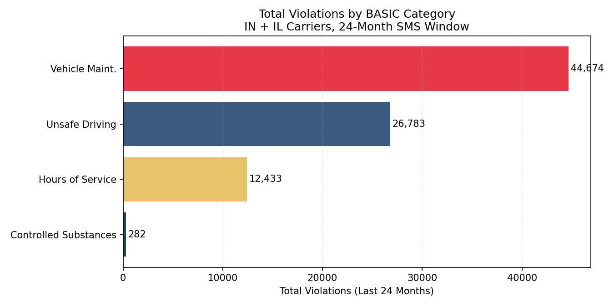
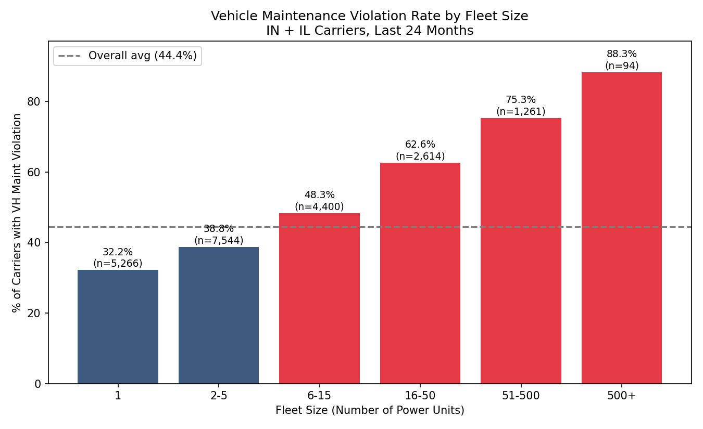
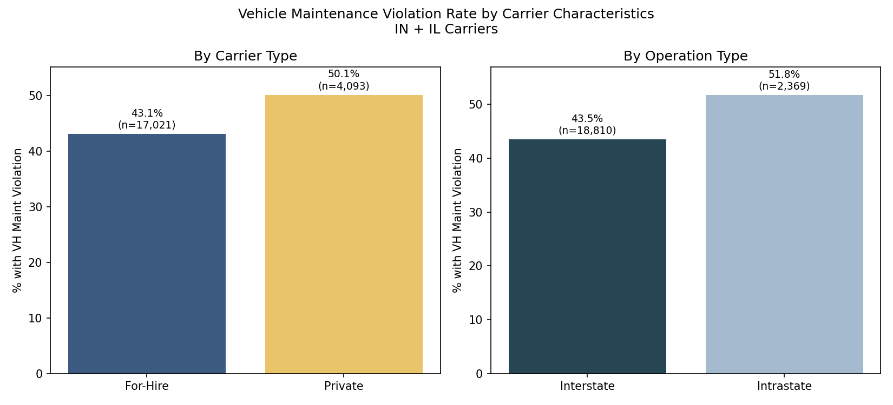
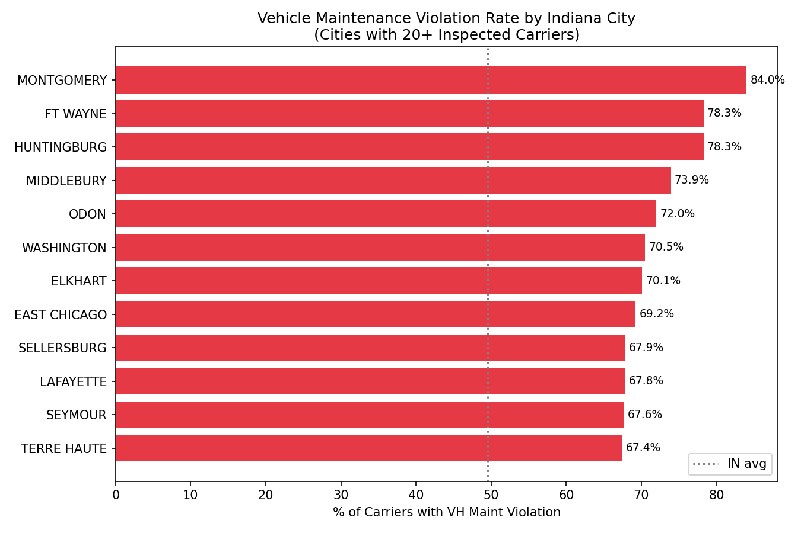
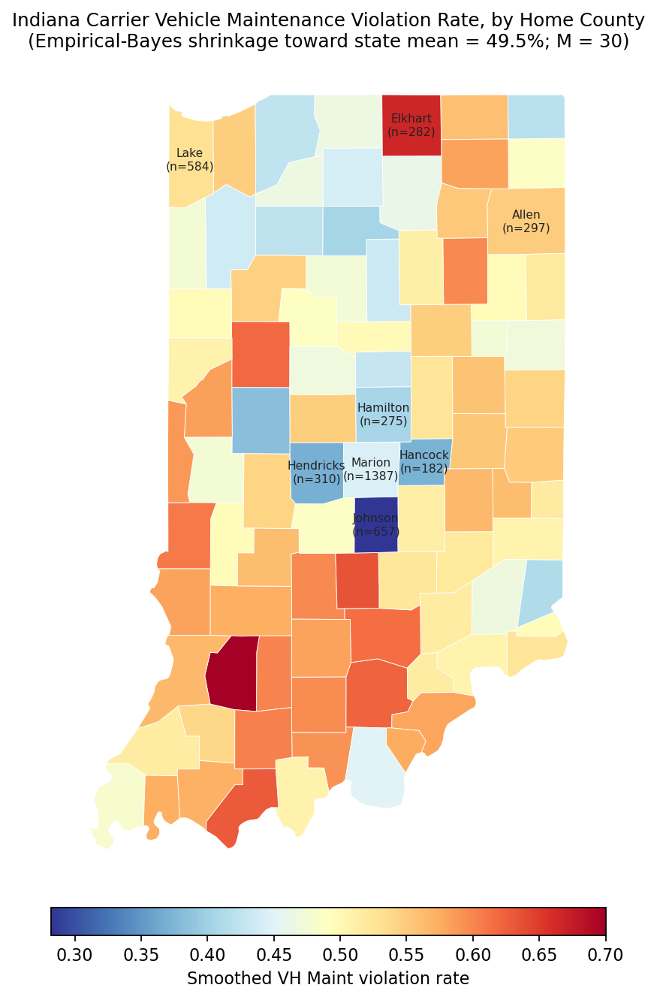
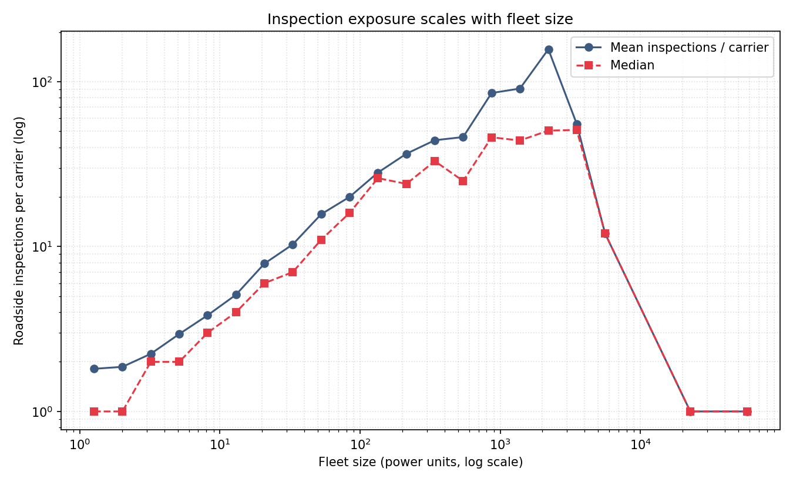
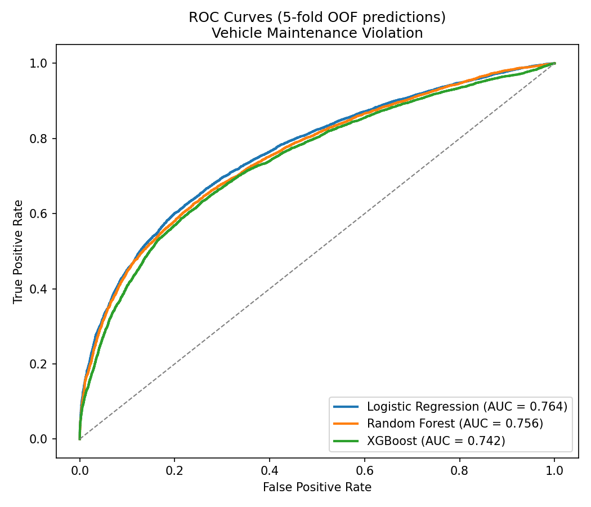
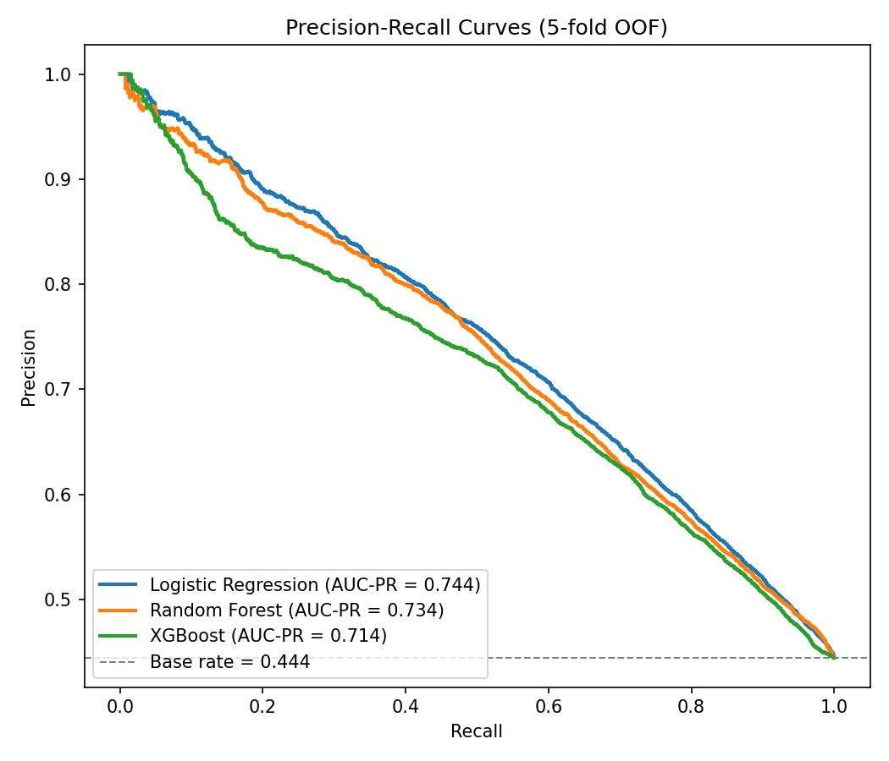
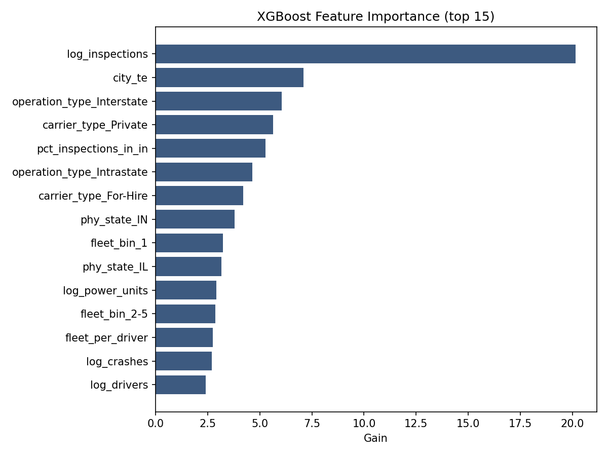
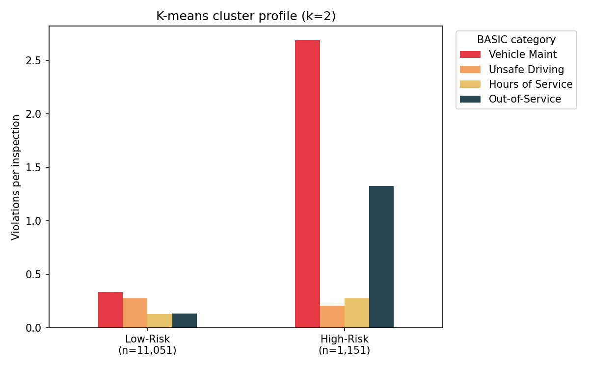

Commercial trucking moves more than 70% of U.S. freight by value, but operational transparency is uneven across the carrier population. Large enterprise carriers run on modern telematics, while many small and mid-size operators still rely on paper logs, phone calls, and dispatcher memory. The gap shows up at roadside inspection: a large share of inspected carriers get cited for vehicle maintenance defects of the kind telematics-based predictive maintenance is meant to catch.
Indiana and Illinois are a good test case for this. Indiana carries more large-truck traffic than any other state, and the Indiana to Chicago corridor is one of the busiest freight arteries in the country. The Federal Motor Carrier Safety Administration (FMCSA) publishes carrier-level compliance histories (registrations, inspections, and crashes) at data.transportation.gov, which gives us a way to study the visibility gap directly.
The research question we ask is whether a carrier's measurable characteristics (fleet size, carrier type, operation type, and geography) predict whether it will incur a vehicle maintenance violation, and if so, which segments of the carrier population are most likely to benefit from real-time fleet monitoring.
The analysis uses only public data. Our main finding is that simple, observable carrier characteristics carry useful predictive signal (cross-validated AUC-ROC of 0.76), and that k-means clustering isolates a small segment of high-violation, mid-size, predominantly Indiana-based carriers.
Three datasets were pulled from data.transportation.gov via the Socrata REST API. Filtering
and cleaning are reproducible end to end from the scripts in scripts/.
| Dataset | Source ID | Records | Role |
|---|---|---|---|
| Motor Carrier Census | kjg3-diqy | 90,128 | Carrier metadata, fleet size, type |
| SMS Inspections | rbkj-cgst | 242,548 | Roadside inspection violations |
| Crash Data | 4wxs-vbns | 18,359 | Carrier crash history (supplemental) |
Census is filtered to carriers with a registered address in IN or IL and at least one active power unit. Inspections and crashes are filtered to events occurring in IN or IL since March 1, 2024 (the FMCSA SMS 24-month window). All three datasets are merged on USDOT number.
The modeling cohort is the 21,179 IN/IL-registered carriers (23.5% of all registered carriers) that received at least one roadside inspection in the SMS window. The binary outcome is whether the carrier incurred at least one Vehicle Maintenance violation, which is the BASIC most directly addressable by telematics-based maintenance and ELD products.
city_state, refit fold-wise inside cross-validation to avoid leakage.Three classifiers are trained and compared: logistic regression with standardized inputs (interpretable baseline), random forest (400 trees), and XGBoost (600 trees, depth 5, learning rate 0.05). All three are evaluated on the same stratified 5-fold split, with the city-level target encoding refit on each training fold. We report AUC-ROC and AUC-PR. The class imbalance is mild (44% positive), so both metrics are meaningful.
For carriers with at least two inspections (n = 12,202) we cluster on standardized per-inspection rates of Vehicle Maintenance, Unsafe Driving, Hours of Service, Controlled Substances, and Out-of-Service violations. Using rates rather than counts avoids a clustering that simply re-discovers fleet-size exposure. We sweep k = 2..7 and pick k by silhouette score. The preliminary report sketched a low/medium/high-risk framing with k=3, but our k=3 fit produced a 59-carrier third cluster that did not correspond to a meaningful operational archetype (it was a small outlier group with high out-of-service rates), so we adopt k = 2, which silhouette prefers and which separates the data more cleanly into high-risk vs. lower-risk carriers.
Across the inspected cohort, 44.5% of carriers incurred at least one Vehicle Maintenance violation in the SMS window, the most common BASIC category by a wide margin. Total recorded violations were 44,674 (Vehicle Maintenance), 26,783 (Unsafe Driving), 12,433 (Hours of Service), and 282 (Controlled Substances). Indiana-registered carriers fared worse than Illinois carriers: 49.5% of inspected Indiana carriers had a Vehicle Maintenance violation versus 41.6% of inspected Illinois carriers.

Fleet size is the most visible driver of the raw violation rate. Owner-operators (1 power
unit) sit at 32.2%, the 51-500 segment reaches 75.3%, and carriers with 500+ units hit 88.3%.
A lot of this is exposure: larger fleets are inspected far more often, and each inspection is
another opportunity to be cited (Figure 6). The model controls for this directly by
including log(inspections) as a feature alongside fleet size, so it does not read
"more inspections" as "worse compliance."

Private carriers (50.1%) post a higher violation rate than for-hire carriers (43.1%). One plausible explanation is selection: for-hire carriers face stronger market pressure to keep a clean record because shippers and brokers screen safety scores during load matching. Operation type goes the same direction: intrastate carriers (51.8%) have a higher rate than interstate carriers (43.5%), consistent with interstate operations being subject to a more rigorous federal oversight regime.

Restricting to Indiana cities with at least 20 inspected carriers, raw violation rates range from roughly the state average (~50%) to above 80% in a few mid-size markets (Figure 4). Some of the spread reflects industry mix (cities with more construction and intrastate freight tend to be higher), and some reflects local enforcement intensity.

Aggregating to the county level gives a cleaner geographic picture. We mapped each carrier to its home county via a ZIP-to-county join (pgeocode) and computed an empirical-Bayes smoothed violation rate per county, shrinking small-n counties toward the state mean (M = 30 carriers worth of prior, state mean = 49.5%). The resulting choropleth (Figure 5) shows the elevated rates concentrated in the northern industrial corridor (Elkhart, Lake) and in pockets of central and southwestern Indiana, while the Indianapolis-area counties (Marion, Hamilton, Hendricks, Hancock, Johnson) sit notably below the state average. This is the geographic feature the model picks up via the smoothed city-level encoding.

Figure 6 confirms the exposure mechanism: average inspections per carrier scale roughly
log-linearly with fleet size. Including log(inspections) in the model lets it
separate exposure from compliance quality, rather than conflate the two.

The three classifiers were evaluated on the same stratified 5-fold split. Results are summarized below; out-of-fold ROC and PR curves appear in Figures 7 and 8.
| Model | AUC-ROC | AUC-PR | Std (ROC) |
|---|---|---|---|
| Logistic Regression | 0.764 | 0.744 | ±0.006 |
| Random Forest | 0.756 | 0.734 | ±0.004 |
| XGBoost | 0.742 | 0.714 | ±0.004 |
| Base rate (positive class) | 0.5 | 0.444 |
All three models beat the no-information baseline. Logistic regression edges out the tree-based models, which is what we'd expect when the dominant signal is roughly log-linear in inspection count and fleet size: once those are encoded, there isn't much non-linear interaction left for trees to find. The achieved AUC-ROC of 0.76 sits at the top of the 0.65-0.75 range we projected in the preliminary report. The AUC-PR of 0.744 is 0.30 above the 0.444 base rate, so a carrier flagged as high-risk by the model is meaningfully more likely than a randomly drawn carrier to have a maintenance violation.


The dominant feature in the XGBoost model is log(inspections) by a wide margin
(gain ≈ 20.1, vs. 7.1 for the next feature). The smoothed city-level encoding is second,
followed by operation type, carrier type, and the share of a carrier's inspections that occur
in Indiana. Crash history adds some marginal signal but is dominated by the structural and
geographic features.

At k=2 the algorithm splits the inspected cohort into a large low-risk segment and a small high-risk segment. The cluster profile is summarized below.
| Cluster | n | VH Maint / Insp | Unsafe / Insp | OOS rate | Median Fleet | % Private | % Intrastate | % IN |
|---|---|---|---|---|---|---|---|---|
| Low-Risk | 11,051 | 0.33 | 0.27 | 0.13 | 7 | 14% | 7% | 31% |
| High-Risk | 1,151 | 2.69 | 0.18 | 1.26 | 4 | 27% | 19% | 51% |
The High-Risk cluster (1,151 carriers, about 9% of the eligible cohort) has roughly 8x the Low-Risk segment's per-inspection vehicle maintenance violation rate, near-100% any-violation rates, and a 10x higher out-of-service rate. It is also over-indexed on private (27% vs. 14%) and intrastate (19% vs. 7%) carriers, and 51% of these carriers are based in Indiana versus 31% of the low-risk segment. This matches the hypothesis sketched in the preliminary report: a distinct high-risk archetype of mid-size private intrastate carriers concentrated in Indiana.

The single most predictive feature is inspection count itself: carriers that get inspected more get cited more. Once we condition on inspection exposure, the next most informative signals are geographic (where the carrier is based and where its trucks are inspected) and structural (private vs. for-hire, intrastate vs. interstate). Fleet size matters only after that. The qualitative characteristics of an operation appear to matter more than its raw size once inspection exposure is held constant.
Logistic regression edged out both random forest and XGBoost on this problem. The dominant signals are monotone and roughly log-linear, and the categorical features have small cardinality, which is the regime in which a linear classifier is hard to beat. Tree-based models gain ground when feature interactions and non-linearity are strong; here those effects are modest, so the additional model capacity costs more variance than it saves bias. The practical implication is that a deployable scoring model for this problem can stay simple and fully interpretable.
Inspection selection bias is the biggest one. 76.5% of registered IN/IL carriers (≈68,949 of 90,128) had no roadside inspections in the SMS window. The carriers that do get inspected are not representative of the full registered population; they skew toward larger and more active fleets. The model's outputs therefore answer "would this carrier, if inspected, get a maintenance citation?" rather than "is this carrier unsafe in real life?" A two-stage model (predict inspection probability first, then violation conditional on inspection) would address this. We sketched the architecture but did not have time to run a clean evaluation, and we flag it as the most important next step.
Address vs. operating geography. A carrier registered in Chicago can accumulate most of its violations on Indiana roads. The model uses both the registered state and the share of a carrier's inspections that occur in Indiana, which partially compensates, but a true operating-geography signal would require route-level data we do not have.
BASIC scope. The Crash Indicator and Hazardous Materials BASICs are not publicly disclosed for property carriers under the FAST Act of 2015. Our outcome is therefore the violation count, not the published BASIC percentile, and our crash features are raw counts rather than the FMCSA-published score.
The High-Risk cluster (≈1,151 IN/IL carriers, mostly private, mostly intrastate, median fleet size 4) accumulates roughly 8x the low-risk carrier's vehicle maintenance violation rate per inspection. These are the carriers with the most to gain from real-time fleet monitoring, which is currently sold to mid-market trucking at roughly $30 to $80 per vehicle per month (industry trade press; e.g., Geotab, Samsara, Motive list pricing for fleets of 5-50 vehicles). An avoided out-of-service event removes a day of lost revenue plus the downstream effect on the carrier's published BASIC scores. The analysis gives a concrete, data-backed profile of where the operational payoff from telematics is concentrated in the IN/IL freight market.
Public FMCSA compliance data carries enough signal to predict vehicle maintenance violations among inspected Indiana and Illinois carriers at AUC-ROC ≈ 0.76, and unsupervised clustering isolates a 1,151-carrier high-risk segment that is over-indexed on private intrastate carriers in Indiana. Two further extensions would strengthen this work:
Repository:
https://github.com/philiphess1/Final-Project.
All code is in scripts/ and runs end to end via
scripts/01_download_data.py (Socrata pull),
02_build_analysis_table.py (merge),
03_features_and_models.py (modeling),
04_clustering.py (k-means),
05_eda_figures.py (EDA figures),
07_choropleth.py (county map), and
06_build_report.py (HTML to PDF render).
A requirements.txt and README accompany the repository.
Data source. U.S. Department of Transportation open data portal, data.transportation.gov. Datasets. kjg3-diqy (Motor Carrier Census), rbkj-cgst (SMS Inspections), 4wxs-vbns (Crash Data).